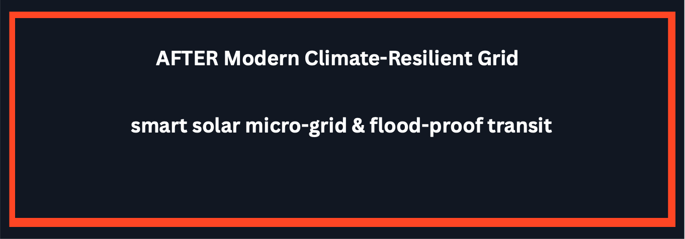

How Much Progress Have We Made?
The world has seen significant progress in infrastructure, industry, and innovation over the past decade. Global manufacturing value added (MVA) per capita rose by 18.1% between 2015 and 2025. Driven by the growing involvement of developing nations, maritime freight volumes climbed to 24.1 billion metric tons in 2024, a 16% increase from 2015. Additionally, 5G mobile broadband now covers 55% of the global population, and as of 2024, 96 per cent of the world’s population was within reach of a mobile broadband network.
Despite these gains, deep regional inequalities persist. Many developing nations face systemic barriers to achieving inclusive industrialization, and 4% of the world’s population still lacked any access to mobile broadband networks in 2024.
What Needs to Be Done?
Investing in transport, irrigation, energy, and information technology is crucial to empowering communities worldwide. To achieve Goal 9 by 2030, we must actively support Least Developed Countries (LDCs), invest in advanced technologies, lower carbon emissions, and bridge the remaining gaps in mobile broadband access.
Without improvements to infrastructure and technology, communities will continue to struggle with poor healthcare, inadequate sanitation and limited access to education.
Interactive Infrastructure Features
1. "Resilience Upgrade" Grid Comparison
Compare an aging, storm-vulnerable city power grid with a modernized, climate-resilient smart grid:

2. Rural Broadband & Connectivity Checker
While 5G covers 55% of the global population, 4% still lack any mobile broadband access. Test if a region qualifies for a Target 9.c connectivity grant:
Check if your county qualifies for an SDG 9.c Rural Broadband Grant
3. Resilient Infrastructure Case Studies
4. Regional Connectivity Spotlight & Whole-Website Night Mode
Closing the digital divide under Target 9.c brings telemedicine, clean irrigation monitoring, mobile banking, and early weather warnings to underserved communities worldwide.